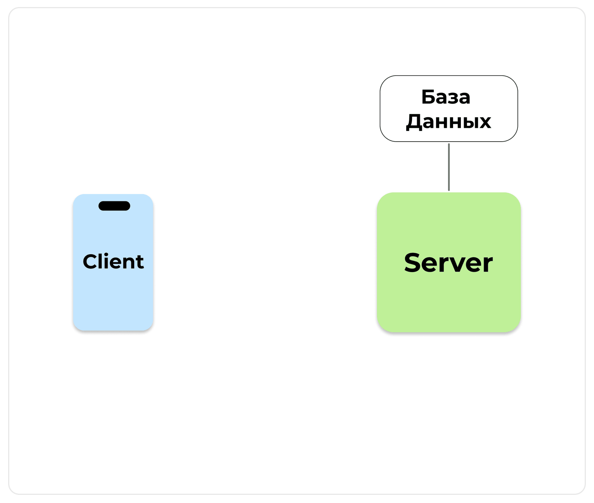
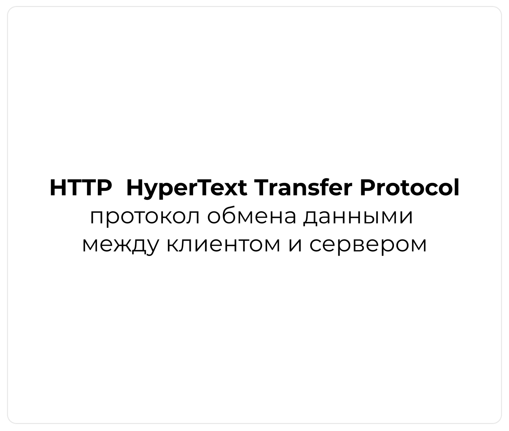
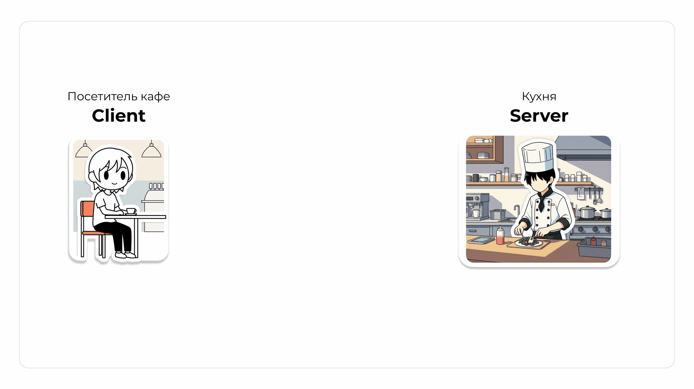
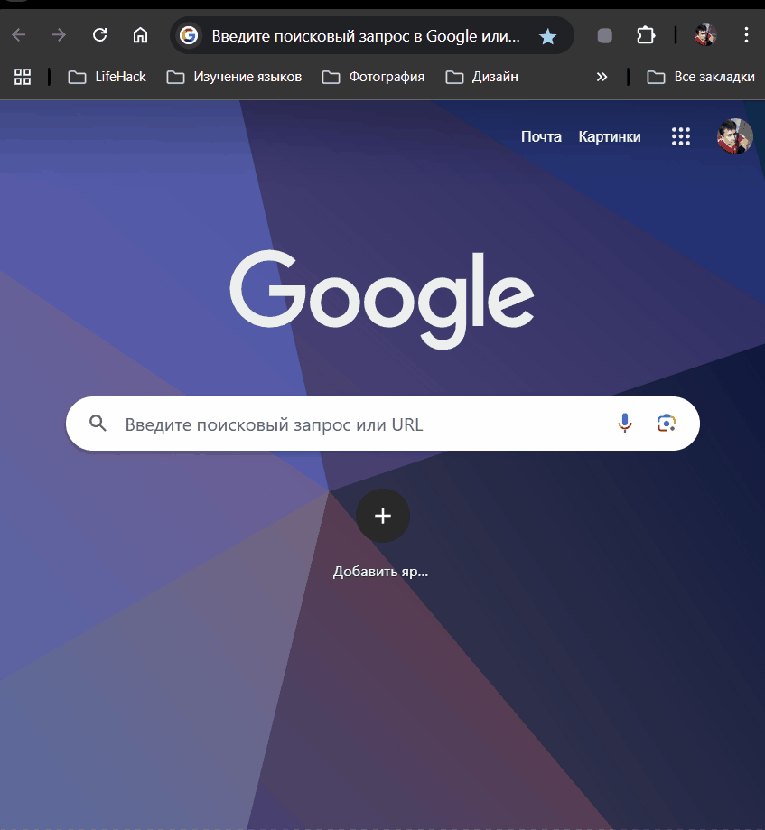
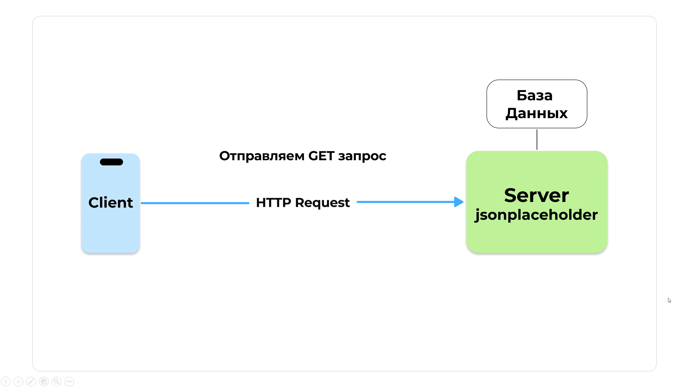
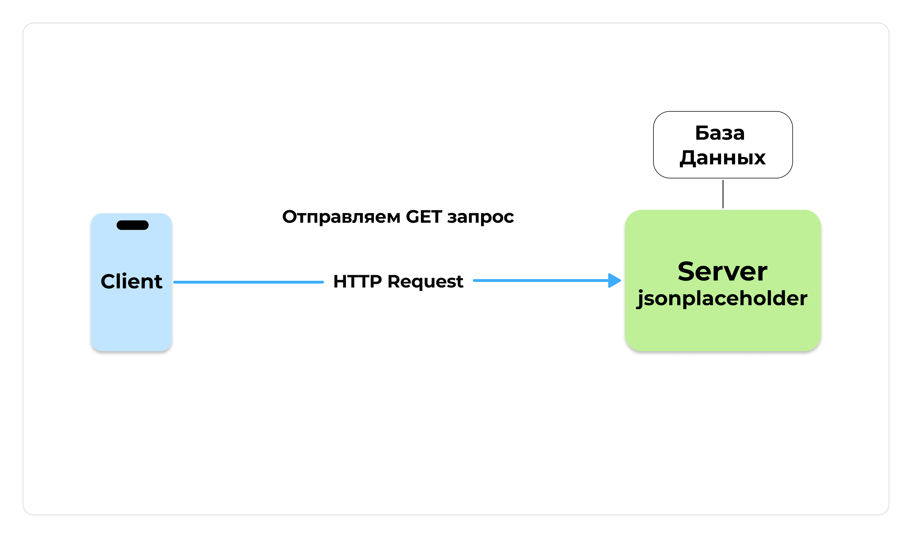

HTTP База
Зачем мобильному приложению нужен интернет?
Для большинства приложений которыми мы ежедневно пользуемся, необходим доступ в интернет (социальные сети, банки, мессенджеры, погода, карты)
С какими проблемы мы столкнёмся, если хранить данные только на телефоне?
Ограниченный объём данных- смартфон не может сохранить всю музыку и видеоролики мира, все товары из ozon и wildberries, внутренняя память крайне небольшая.Неактуальная информация- новости и соц.сети обновляются с бешенной скоростью и всё это в режиме онлайн.Потеря данных- если смартфон сломается, то и данные будут утеряны навсегда (облачные хранилища увеличивают шанс сохранения данных).Изолированность- нет возможности быстро поделиться данными (например, фото и видео) с другими людьми.
Клиент-Серверная Архитектура
Клиент-Серверная Архитектура - это способ работы между программами, где одна программа СЕРВЕР предоставляет услуги, а другая программа КЛИЕНТ эти услуги использует.
Клиент(flutter-приложение) отправляет запрос сервер (Request) чтобы выполнить какие-то действия с данными.Серверпринимает запросы от клиента, выполняет бизнес логику, и отправляет назад клиенту ответ (Response)

Удаленный сервер - мощный компьютер с данными, с подключением к интернету.
Облако - красивое название для сети таких мощных серверов.
Как устройства и приложения общаются с сервером
Большинство приложений постоянно взаимодействует с сетью с помощью протокола HTTP
HTTP (HyperText Transfer Protocol, протокол передачи гипертекста) - протокол обмена данными между клиентом и сервером. В современном применении этот протокол позволяет обмениваться ни только гипертекстом, а вообще любой информацией: тексты, изображения, аудио, видео.
Клиент отправляет HTTP-запрос (HTTP Request) серверу, он его обрабатывает и отправляет клиенту HTTP-ответ (HTTP Response)

Живая аналогия : представим что мы находимся в кафе (Client), а кухня, где будет обрабатываться наш запрос это Server.
В теории, нельзя по наглому взять и ворваться на кухню за едой. Обычно нужен официант, который примет заказ (Запрос HTTP Request), отправит его на кухню (Server) и после принесет готовое блюдо (HTTP Response)
В контексте разработки, официант является HTTP (HyperText Transfer Protocol)Протокол это набор правил, по которым устройства в сети общаются друг с другом.
Пытаемся ворваться на кухню

Используем культурный протокол
Запрос на Сервер
Сделаем первый запрос на сервер для получения данных и разберём следующие понятия:
URL адресHTTP МетодыHTTP ЗаголовкиJSONAPI
Чтобы продемонстрировать работу с HTTP нужно, чтобы был готовый сервер, на сервере чтобы была база данных, а ещё чтобы этот сервер предоставлял API для доступа к данным.
API - Application Programming Interface
Программный Интерфейс. Это набор инструкций, которые позволяют разным программам удобно взаимодействовать друг с другом.
Правила API описывают возможные запросы к серверу и ответы сервера на эти запросы.
Учиться создавать готовый сервер и работать с СУБД мы будем не в этом разделе курса, поэтому удобней и эффективней воспользоваться готовыми решениями.
Для начала, воспользуемся самым простым сервисом https://jsonplaceholder.typicode.com/
Он предоставляет готовый API для доступа к постам блога и комментариям. Это не настоящие данные, они нужны только для тестирования и учёбы, их обычно называют Mock данные.
- Используем
HTTPметодGETчтобы получить данные - Для работы с
HTTPв стандартной библиотекеdart:ioесть классHttpClient
Первый запрос с `HttpClient`
Dart


void main() async {
await fetchData(id: "1"); // Получить данные про 1 пост
await fetchData(); // Получить данные про все посты
}
// Получаем данные через HTTP метод GET
Future<void> fetchData({String id = ""}) async {
HttpClient httpClient = HttpClient(); // Создаем экземпляр HttpClient
// Обращаемся по API к первому посту
final url = 'https://jsonplaceholder.typicode.com/posts/$id';
try {
// Создаем GET-запрос к API
HttpClientRequest request = await httpClient.getUrl(Uri.parse(url));
// Отправляем запрос и получаем ответ
// Обязательно закрываем соединение
HttpClientResponse response = await request.close();
// Проверяем статус код
if (response.statusCode == HttpStatus.ok) {
// Читаем ответ как строку
String responseBody = await response.transform(utf8.decoder).join();
print('Успешный GET-запрос:');
print(responseBody);
} else {
print('Ошибка при GET-запросе: Статус код ${response.statusCode}');
}
} catch (e) {
print('Произошла ошибка: $e');
} finally {
httpClient.close(); // Закрываем HttpClient, когда он больше не нужен
}
}
JSON
{
"userId": 1,
"id": 1,
"title": "sunt aut facere repellat provident occaecati excepturi optio reprehenderit",
"body": "quia et suscipit\nsuscipit recusandae consequuntur expedita et cum\nreprehenderit molestiae ut ut quas totam\nnostrum rerum est autem sunt rem eveniet architecto"
}
JSON
[
{
"userId": 1,
"id": 1,
"title": "sunt aut facere repellat provident occaecati excepturi optio reprehenderit",
"body": "est rerum tempore vitae\nsequi sint nihil reprehenderit dolor beatae ea dolores neque\nfugiat blanditiis voluptate porro vel nihil molestiae ut reiciendis\nqui aperiam non debitis possimus qui neque nisi nulla"
}
]
Что такое JSON
- В первом случае получаем один объект c данными
- Во втором случае получаем массив этих объектов
На что похожи эти данные? На структуру словаря Map, там есть ключ и значение.
На самом деле это очень популярный формат для передачи данных JSON
JSON - JavaScript Object Notation
Это формат обмена данными, который стал стандартом.
Данные, передаваемые по HTTP, могут иметь любой формат, но чаще всего используется формат JSON. Он не зависит от языка программирования и очень простой.
Важно запомнить
Ключи - строковые переменныеЗначения - строки, числа, булевы значения, объекты, массивы, null.
- Функции и даты в обычном JSON не поддерживаются.
- После последней пары запятая не ставится это распространённая ошибка.
- Для хранения данных используются две структуры объекты и массивы.
JSON
{
"Key1": "Value",
"Key2": 42,
"Key3": true,
"Key3": ["Dart", "Swift", "Kotlin", "Python"]
}
Если перейти в любой браузер и ввести в строку поиска URL адрес https://jsonplaceholder.typicode.com/posts/1 , то увидим данные в формате json внутри браузера (плагин для chrome jsonify)
Обычно такими данными в современной разработке обмениваются клиент и сервер.

Что такое URL адрес
URL - Uniform Resource Locator
Это строка, определяющая расположение ресурса (например, веб-страницы, текстовых данных, изображения, видео) в Интернете.
В контексте протокола HTTP, URL называют веб-адресом или сылкой
Например https://jsonplaceholder.typicode.com/posts/1
https://- это протокол, в данном случае защищенныйHTTP Securejsonplaceholder.typicode.com- это адрес сервера где размещёнAPIjsonplaceholder- название сервиса.typicode- имя организации/разработчика.com- доменная зона (для РФ это.ru)
/posts/1- это ресурс (endpoint)/posts- это коллекция постов/1- этоIDконкретного поста
Что такое статус коды
Коды состояния Status Code используются, чтобы сообщить клиенту статус его запроса. HTTP-сервер возвращает код, который принадлежит одной из пяти категорий кодов
- Информационные ответы (
100–199) - Успешные ответы (
200–299) - Сообщения о перенаправлении (
300–399) - Ошибки клиента (
400–499) - Ошибки сервера (
500–599)
Например, самые популярные коды ответов:
200 OK - запрос успешно выполнен
400 Bad Request - в запросе ошибка
404 Not Found - cервер не может найти запрошенный ресурс
500 Internal Error - на сервере произошла ошибка, он не может обработать запрос
Что такое Http Методы
HTTP определяет множество методов запроса, которые указывают, какое желаемое действие выполнится для данного ресурса.
GETдля получения данныхPOSTдля отправки данныхPUTдля обновления данныхDELETEдля удаления данных
Например для jsonplaceholder
GET /posts/1- получить пост.POST /posts- создать пост.PUT /posts/1- обновить пост.DELETE /posts/1- удалить пост.
Схематичная работа Http Request и Http Response

Структура Http Request
Когда происходит GET-запрос по адресу https://jsonplaceholder.typicode.com/posts/1 через приложение написанное на Dart структура HTTP-запроса будет следующей:
- Строка запроса (
Request Line) - Заголовки запроса (
Request Headers) - Тело запроса (
Request Body)

.png)
HTTP
GET /posts/1 HTTP/1.1
Host: jsonplaceholder.typicode.com
User-Agent: Dart/3.0 (dart:io)
Accept-Encoding: gzip, deflate, br
Accept: application/json
Connection: keep-alive
- Строка запроса (
Request Line)GET- метод HTTP-запроса/posts/1- путь к ресурсу на сервереHTTP/1.1- версия протокола HTTP
- Заголовки запроса (
Request Headers)Host- указывает доменное имя сервера, к которому отправляется запросUser-Agent- идентифицирует клиента, который делает запросAccept-Encoding- сообщает типы кодирования данных которые понимает клиентAccept- какие типы медиа (MIME-типы) клиент может принять в качестве ответаConnection- сообщает серверу, как клиент хочет управлять соединением.
- Тело запроса (
Request Body)- Для
GETзапросовRequest Bodyнет Request Bodyесть уPOSTиPUT
- Для
Структура Http Response
Классическая структура ответа следующая:
- Строка состояния (
Status Line) - Заголовки ответа (
Response Headers) - Тело ответа (
Response Body)
.png)
HTTP
HTTP/1.1 200 OK
Date: Tue, 10 Jun 2025 14:39:21 GMT
Content-Type: application/json; charset=utf-8
Content-Length: 290
Connection: keep-alive
X-Powered-By: Express
ETag: W/"122-z6lQYx/K6wR0B5+xY9J2c9fGgU"
Via: 1.1 vegur
{
"userId": 1,
"id": 1,
"title": "sunt aut facere repellat provident occaecati excepturi",
"body": "quia et suscipit\nsuscipit recusandae consequuntur expedita"
}
- Строка состояния (
Status Line)HTTP/1.1версия протокола200-Status Codeв данном случае успешный статус кодOK-Reason Phraseтекст состояния. Краткое и удобное объяснение статус кода
- Заголовки ответа (
Response Headers)Date- дата и время создания ответа.Content-Type- указывает тип медиа и кодировку символовContent-Length- размер тела ответа в байтах.Connection- сообщает серверу, как клиент хочет управлять соединением.X-Powered-By- указывает на технологию, используемую для генерации ответа на сервере (в данном случае, фреймворк Express.js).
- Тело ответа (
Response Body)- содержит данные, которые сервер отправляет клиенту